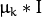
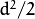
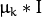
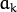
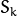
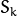
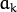
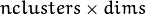

Expectation Maximization¶
This section describes obsolete C interface of EM algorithm. Details of the algorithm and its C++ interface can be found in the other section Expectation Maximization.
Note
- An example on using the Expectation Maximalization algorithm can be found at opencv_source_code/samples/cpp/em.cpp
- (Python) An example using Expectation Maximalization for Gaussian Mixing can be found at opencv_source_code/samples/python2/gaussian_mix.py
CvEMParams¶
-
struct
CvEMParams¶
Parameters of the EM algorithm. All parameters are public. You can initialize them by a constructor and then override some of them directly if you want.
CvEMParams::CvEMParams¶
The constructors
-
C++:
CvEMParams::CvEMParams()¶
-
C++:
CvEMParams::CvEMParams(int nclusters, int cov_mat_type=EM::COV_MAT_DIAGONAL, int start_step=EM::START_AUTO_STEP, CvTermCriteria term_crit=cvTermCriteria(CV_TERMCRIT_ITER+CV_TERMCRIT_EPS, 100, FLT_EPSILON), const CvMat* probs=0, const CvMat* weights=0, const CvMat* means=0, const CvMat** covs=0 )¶ Parameters: - nclusters – The number of mixture components in the Gaussian mixture model. Some of EM implementation could determine the optimal number of mixtures within a specified value range, but that is not the case in ML yet.
- cov_mat_type –
Constraint on covariance matrices which defines type of matrices. Possible values are:
- CvEM::COV_MAT_SPHERICAL A scaled identity matrix . There is the only parameter
 to be estimated for each matrix. The option may be used in special cases, when the constraint is relevant, or as a first step in the optimization (for example in case when the data is preprocessed with PCA). The results of such preliminary estimation may be passed again to the optimization procedure, this time with
to be estimated for each matrix. The option may be used in special cases, when the constraint is relevant, or as a first step in the optimization (for example in case when the data is preprocessed with PCA). The results of such preliminary estimation may be passed again to the optimization procedure, this time with cov_mat_type=CvEM::COV_MAT_DIAGONAL. - CvEM::COV_MAT_DIAGONAL A diagonal matrix with positive diagonal elements. The number of free parameters is
dfor each matrix. This is most commonly used option yielding good estimation results. - CvEM::COV_MAT_GENERIC A symmetric positively defined matrix. The number of free parameters in each matrix is about . It is not recommended to use this option, unless there is pretty accurate initial estimation of the parameters and/or a huge number of training samples.
- CvEM::COV_MAT_SPHERICAL A scaled identity matrix . There is the only parameter
- start_step –
The start step of the EM algorithm:
- CvEM::START_E_STEP Start with Expectation step. You need to provide means  of mixture components to use this option. Optionally you can pass weights
 and covariance matrices  of mixture components.
and covariance matrices  of mixture components. - CvEM::START_M_STEP Start with Maximization step. You need to provide initial probabilities
 to use this option.
to use this option. - CvEM::START_AUTO_STEP Start with Expectation step. You need not provide any parameters because they will be estimated by the kmeans algorithm.
- CvEM::START_E_STEP Start with Expectation step. You need to provide means  of mixture components to use this option. Optionally you can pass weights
- term_crit – The termination criteria of the EM algorithm. The EM algorithm can be terminated by the number of iterations
term_crit.max_iter(number of M-steps) or when relative change of likelihood logarithm is less thanterm_crit.epsilon. - probs – Initial probabilities of sample
 to belong to mixture component
to belong to mixture component  . It is a floating-point matrix of
. It is a floating-point matrix of  size. It is used and must be not NULL only when
size. It is used and must be not NULL only when start_step=CvEM::START_M_STEP. - weights – Initial weights of mixture components. It is a floating-point vector with elements. It is used (if not NULL) only when
start_step=CvEM::START_E_STEP. - means – Initial means of mixture components. It is a floating-point matrix of  size. It is used used and must be not NULL only when
start_step=CvEM::START_E_STEP. - covs – Initial covariance matrices of mixture components. Each of covariance matrices is a valid square floating-point matrix of
 size. It is used (if not NULL) only when
size. It is used (if not NULL) only when start_step=CvEM::START_E_STEP.
The default constructor represents a rough rule-of-the-thumb:
CvEMParams() : nclusters(10), cov_mat_type(1/*CvEM::COV_MAT_DIAGONAL*/),
start_step(0/*CvEM::START_AUTO_STEP*/), probs(0), weights(0), means(0), covs(0)
{
term_crit=cvTermCriteria( CV_TERMCRIT_ITER+CV_TERMCRIT_EPS, 100, FLT_EPSILON );
}
With another constructor it is possible to override a variety of parameters from a single number of mixtures (the only essential problem-dependent parameter) to initial values for the mixture parameters.
CvEM¶
-
class
CvEM: publicCvStatModel¶ The class implements the EM algorithm as described in the beginning of the section Expectation Maximization.
CvEM::train¶
Estimates the Gaussian mixture parameters from a sample set.
-
C++:
CvEM::train(const Mat& samples, const Mat& sampleIdx=Mat(), CvEMParams params=CvEMParams(), Mat* labels=0 )¶
-
C++:
CvEM::train(const CvMat* samples, const CvMat* sampleIdx=0, CvEMParams params=CvEMParams(), CvMat* labels=0 )¶ Parameters: - samples – Samples from which the Gaussian mixture model will be estimated.
- sampleIdx – Mask of samples to use. All samples are used by default.
- params – Parameters of the EM algorithm.
- labels – The optional output “class label” for each sample:
 (indices of the most probable mixture component for each sample).
(indices of the most probable mixture component for each sample).
Unlike many of the ML models, EM is an unsupervised learning algorithm and it does not take responses (class labels or function values) as input. Instead, it computes the
Maximum Likelihood Estimate of the Gaussian mixture parameters from an input sample set, stores all the parameters inside the structure:
in probs,
in means ,
in covs[k],
in weights , and optionally computes the output “class label” for each sample:
(indices of the most probable mixture component for each sample).
The trained model can be used further for prediction, just like any other classifier. The trained model is similar to the
CvNormalBayesClassifier.
For an example of clustering random samples of the multi-Gaussian distribution using EM, see em.cpp sample in the OpenCV distribution.
CvEM::predict¶
Returns a mixture component index of a sample.
-
C++:
CvEM::predict(const Mat& sample, Mat* probs=0 )const¶
-
C++:
CvEM::predict(const CvMat* sample, CvMat* probs)const¶ Parameters: - sample – A sample for classification.
- probs – If it is not null then the method will write posterior probabilities of each component given the sample data to this parameter.
CvEM::getNClusters¶
Returns the number of mixture components  in the Gaussian mixture model.
in the Gaussian mixture model.
-
C++:
CvEM::getNClusters()const¶
-
C++:
CvEM::get_nclusters()const¶
CvEM::getMeans¶
Returns mixture means .
-
C++:
CvEM::getMeans()const¶
-
C++:
CvEM::get_means()const¶
CvEM::getCovs¶
Returns mixture covariance matrices .
-
C++:
CvEM::getCovs(std::vector<cv::Mat>& covs)const¶
-
C++:
CvEM::get_covs()const¶
CvEM::getWeights¶
Returns mixture weights .
-
C++:
CvEM::getWeights()const¶
-
C++:
CvEM::get_weights()const¶
CvEM::getProbs¶
Returns vectors of probabilities for each training sample.
-
C++:
CvEM::getProbs()const¶
-
C++:
CvEM::get_probs()const¶
For each training sample (that have been passed to the constructor or to CvEM::train()) returns probabilities to belong to a mixture component .
CvEM::getLikelihood¶
Returns logarithm of likelihood.
-
C++:
CvEM::getLikelihood()const¶
-
C++:
CvEM::get_log_likelihood()const¶
CvEM::write¶
Writes the trained Gaussian mixture model to the file storage.
-
C++:
CvEM::write(CvFileStorage* fs, const char* name)const¶ Parameters: - fs – A file storage where the model will be written.
- name – A name of the file node where the model data will be written.
CvEM::read¶
Reads the trained Gaussian mixture model from the file storage.
-
C++:
CvEM::read(CvFileStorage* fs, CvFileNode* node)¶ Parameters: - fs – A file storage with the trained model.
- node – The parent map. If it is NULL, the function searches a node with parameters in all the top-level nodes (streams), starting with the first one.
Help and Feedback
You did not find what you were looking for?- Ask a question on the Q&A forum.
- If you think something is missing or wrong in the documentation, please file a bug report.